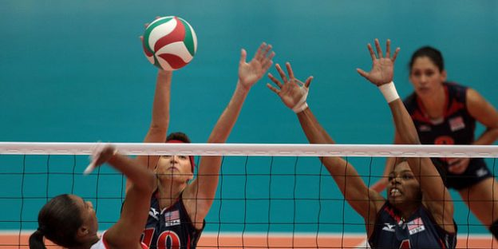
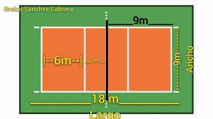

REGLAS

El voleibol es un deporte colectivo que puede jugarse en campos interiores, al aire libre e incluso en la playa (modalidad conocida como vóley playa).
El terreno de juego es un campo rectangular de 18m x 9m dividido en dos partes del mismo tamaño por una línea central. Está rodeado por una zona libre de mínimo 3m de ancho en todos los lados que sobresale al área de juego.
A tres metros de la línea central se sitúa la línea de ataque que delimita la zona ofensiva.
La redes de voleibol es variable en altura. Para competiciones masculinas mide 2’43m y para competiciones femeninas 2’24m. En la parte superior de los postes se encuentran dos varillas o antenas que sobresalen 0’80m y delimitan la zona por donde ha de pasar el balón.
El balón es esférico y flexible, con 65-67 cm de circunferencia y 260-280 g de peso.
Durante el juego el balón tiene que ser golpeado continuamente, no puede ser retenido ni tomado por ningún jugador
meidas de la cancha
El campo de juego es un rectángulo de dimensiones 18 m x 9 m, tanto para competiciones internacionales como nacionales, medidas desde el borde exterior de las líneas que delimitan el campo de juego.

VOLVER AL INICIO